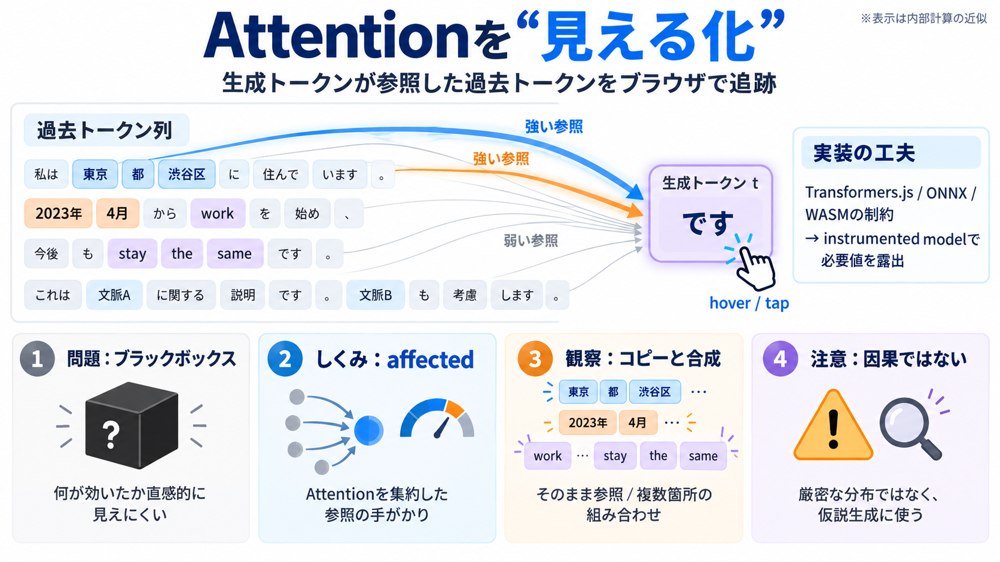

LLM Attention Visualization
Another tricky thing is that some of the things in the visualization are not actually meant to be read, so they're not d…

Another tricky thing is that some of the things in the visualization are not actually meant to be read, so they're not d…
In each head, we perform masked self-attention calculations. This mechanism allows the model to generate sequences by fo…
works because each single-head attention module is initialized with a different set of weights. And then each of them wi…
First, we multiply query and key to get the raw attention scores. Then, we scale the scores by dividing by the square ro…
In Qwen3-Next, this pattern appears as a 3:1 mix of Gated DeltaNet and Gated Attention blocks. Gated DeltaNet is also cl…